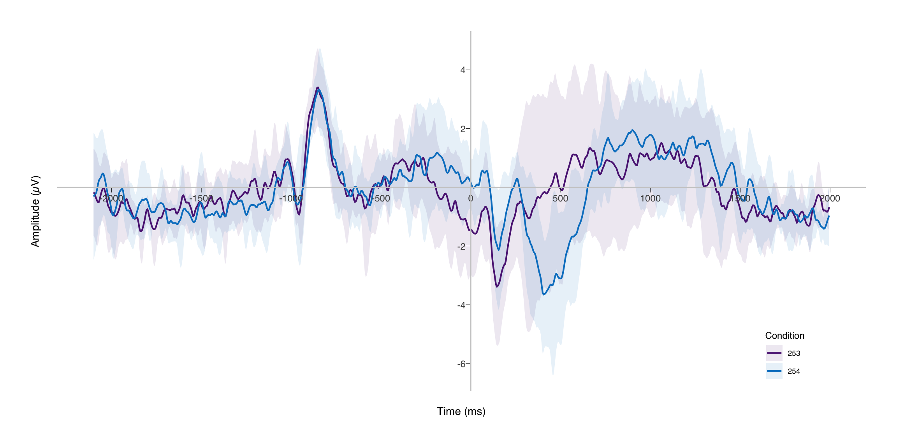

How I Plot ERPs in R
March 30, 2019
Introduction
Plotting ERPs is one of the essential skills in EEG neuroscience. There
are many possible ways of going about this task, some better than
others. Myself, I use either MATLAB or R to plot ERPs. In my experience,
MATLAB is by far the preferred method since most of the EEG analysis
takes place in MATLAB already, but I believe that there’s some merit to
using R. One of my main arguments is aesthetics. Using for instance the
{ggplot2} package for the ERP adds a more unified look if you’re using
ggplot for the rest of the visualizations of the statistics as well.
Another argument could be that it’s easier to add statistical
information to the ERP. When I read EEG articles, I find that the ERP
plots are sometimes difficult to read, and that they don’t supply any
information about the statistical error in the grand averaged ERP. Of
course, I have my own code for plotting grand averaged ERP in MATLAB
showing the confidence interval for each ERP too, but I find it easier
and prettier in R. However, MATLAB is the gold standard within EEG
research and getting the data from MATLAB to R requires some trickery. I
could not possibly claim that the code I use is the best way to do this.
I’m 100% sure there are probably better, quicker, and more elegant ways
available of going about this, but I could not find such code on the
internet. That’s why I thought I’d share my method of going about it,
but again please keep in mind that there are probably better ways of
going about this. At this point I also feel the obligation to point out
that a package called erp.easy exists that was purpose built for working
with ERPs and ERP statistics in R. However, I couldn’t get it to work
with my data, so that’s where the necessity for me came from to build my
own code. I’ll share my code underneath and I’ll annotate the code where
necessary.
Loading the data
Since I cannot share participants' data, I used an open EEG dataset
downloaded here, this data comes from a psychophysics group of
5 participants with 2 conditions. It came in the EEGLAB format, same as
my own data. The first step is to take the data out of MATLAB and take
it to a format that can be easily understood by R. The most convenient
way I thought of was to take the EEG.data field, transform it into a
two-dimensional metrix and store it in a .csv file.
If you have a large amount of participants, I can recommend to only extract data from the channels of interest or the conditions of interest. One can make one file per channel or participant, or one large file that contains everything. I usually choose the latter, and that’s what I’ll work with here. So my file looks as follows: one column with the channel, one column with the ID, one with the condition (or trigger). If I’m doing a between-groups analysis, I’ll also have a column with the group. All the other columns are the amplitudes with across the timepoints.
data <- read_delim("AllChannels_ERP.txt", delim = "\t", col_names = FALSE)
I also have a file with the timepoints for each value. i.e. with epoch
of 500 milliseconds ranging from 100 milliseconds pre-stimulus to 400
milliseconds post-stimulus, all the timepoints according to the sampling
rate are the values in this file. It is basically nothing more than a
print of the values in the EEG.times field from the EEGLAB dataset.
Since I didn’t include any headers in my file, I rename them here. I
give the the identifying columns their appropriate names, and for the
amplitudes, I attach the values from the times variable as names to
these columns, so -100 will be one column, -99 will be another, and so
on.
ERPdata <- data %>%
rename(Channel = V1,
ID = V2,
Condition = V3) %>%
mutate(ID = factor(ID),
Condition = factor(Condition))
oldnames <- sprintf("V%s", 1:ncol(times) + 3)
ERPdata <- ERPdata %>%
rename_at(vars(all_of(oldnames)), ~ as.character(times))
Preparing the data
Then I specify a variable with the channels of interest. These will be the channels I’ll average across later.
coi <- c("P1", "P2", "Pz", "P3", "P4", "PO3", "PO4", "POz");
Then I calculate the means across channels and conditions. This goes in two steps. First I’ll select only the channels of interest, then I’ll group by ID, condition, and channel. And then calculate the average of every other column, in this case column 4 to the end of the file. Then I’ll do the same, except now I’ll group by ID and condition. So then we have one average ERP for every condition in all participants.
ERPdata_mChan <- ERPdata %>%
filter(Channel %in% coi) %>%
group_by(ID,Condition,Channel) %>%
summarise_at(vars(names(.)[4:ncol(.)]), list(~ mean(., na.rm = TRUE))) %>%
ungroup()
ERPdata_mCond <- ERPdata_mChan %>%
group_by(ID,Condition) %>%
summarise_at(vars(names(.)[4:ncol(.)]), list(~ mean(., na.rm = TRUE))) %>%
ungroup()
MeanERPs <- ERPdata_mCond
Calculate grand average and confidence interval
The next piece of code calculates the grand average. I will also
calculate the confidence interval and then transform it from the
interval relative to the mean to the absolute values representing the
upper and lower boundaries of the confidence interval. Here I use a
confidence interval of 95%. We first transform from wide to long format
using the pivot_longer() function from the {tidyr} package. Then we
convert the (now character) Time variable to numeric. Then we will
calculate the average amplitude per time point. Then using the CI()
function from the {Rmisc} package, we calculate the upper and lower
bounds of the confidence interval.
ERP_plotdata <- MeanERPs %>%
pivot_longer(-c(ID,Condition), names_to = "Time", values_to = "Amplitude") %>%
mutate(Time = as.numeric(Time)) %>%
group_by(Condition,Time) %>%
summarise(Mean_Amplitude = mean(Amplitude),
CIlower = Rmisc::CI(Amplitude, ci = 0.95)["lower"],
CIupper = Rmisc::CI(Amplitude, ci = 0.95)["upper"])
## `summarise()` has grouped output by 'Condition'. You can override using the
## `.groups` argument.
Preparing to plot
Before we can start plotting, I just wanted to share one piece of code I
found on StackOverflow. The question there was to move the x-axis and
y-axis line towards 0, rather than the edge of the plot. You can find
the question (and answers) here. I combined two answers into a function that
moves both the y- and the x-axis to 0. It is my personal preference to
have a line indicating 0. This makes the plots easier to read and looks
prettier too, but of course this is subjective. Alternatively we could
also add a geom_hline() and geom_vline(), both with intercept at 0,
and turn the axes off (as default in theme_norment(). This will still
give you the lines at x=0 and y=0 but will keep the axis labels at 0.
I personally prefer to have a plot that is as clean as possible, to really put focus on the ERP curve. So I’d typically turn off the grid lines. I also remove one of the 0-ticks to avoid any awkward overlay with the axes, especially since the 0 is also indicated by the axis line already.
I take the colors from our own {normentR} package. I ask for two
colors from the “logo” palette.
After running the chunk below, we have a beautiful ERP with a nice confidence interval. I hope this was helpful and informative. Good luck!
colors <- norment_pal(palette = "logo")(2)
ERPplot <- ggplot(ERP_plotdata, aes(x = Time, y = Mean_Amplitude,
colour = Condition, group = Condition)) +
geom_ribbon(aes(ymin = CIlower, ymax = CIupper, fill = Condition),
alpha = 0.1, linetype = 0) +
geom_line(size = 0.75) +
scale_color_manual(values = colors) +
scale_fill_manual(values = colors) +
scale_x_continuous(breaks = c(seq(-2000,2000,500))) +
scale_y_continuous(breaks = c(seq(-12,-1,2), seq(2,12,2))) +
coord_cartesian() +
labs(x = "Time (ms)",
y = "Amplitude (µV)") +
theme_norment(ticks = TRUE, grid = FALSE) +
theme(
legend.position = c(0.9,0.1),
axis.text.x = element_text(vjust = -0.1)
)
shift_axes(ERPplot, x = 0, y = 0)
